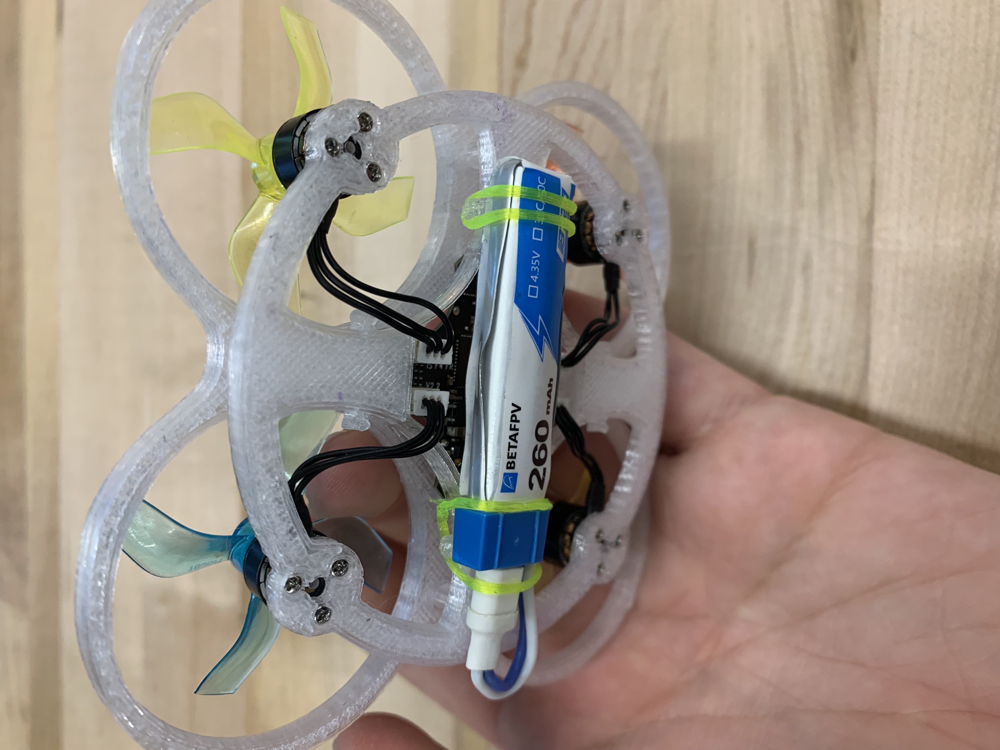
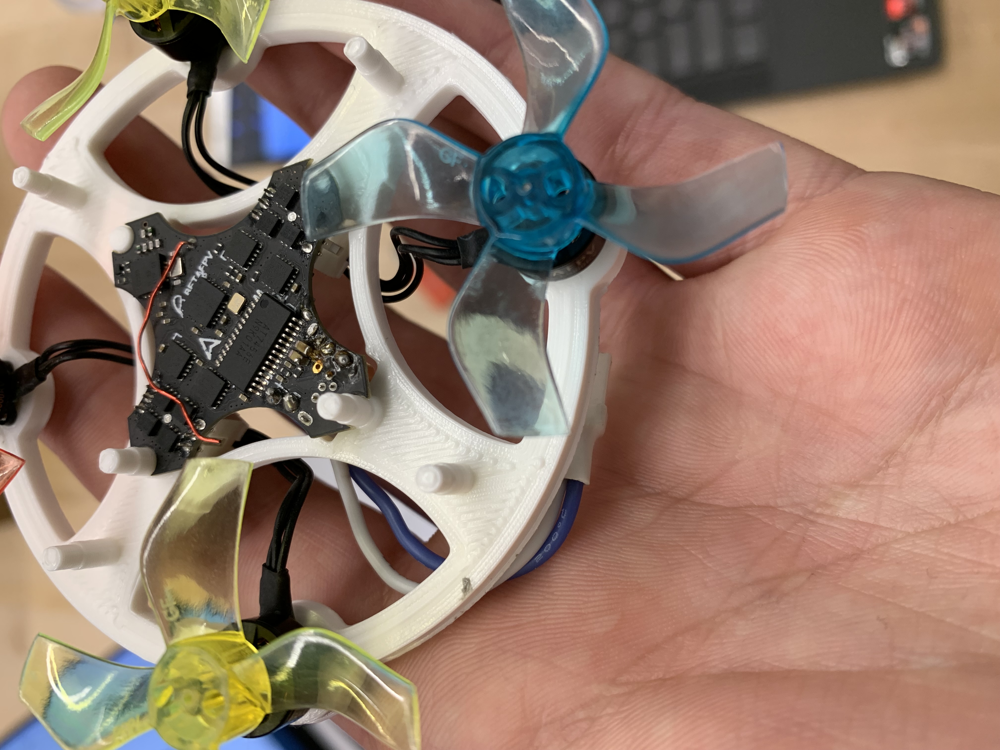
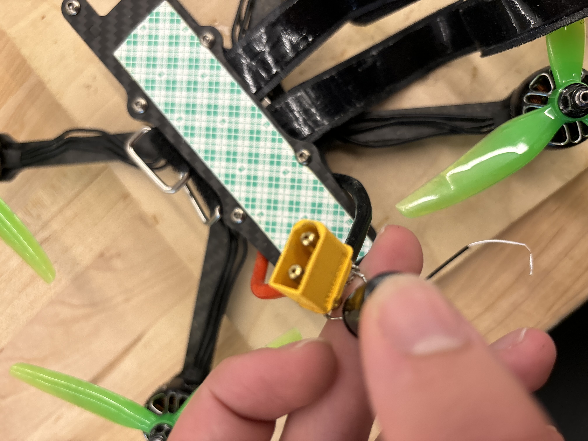
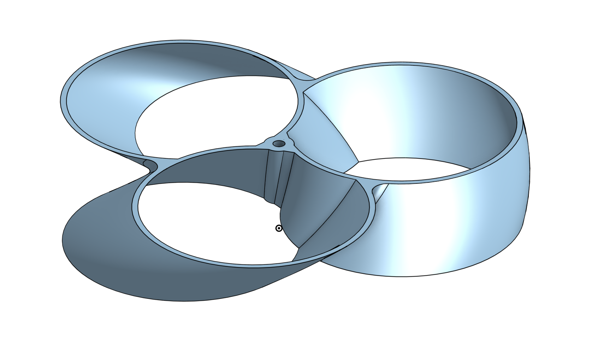
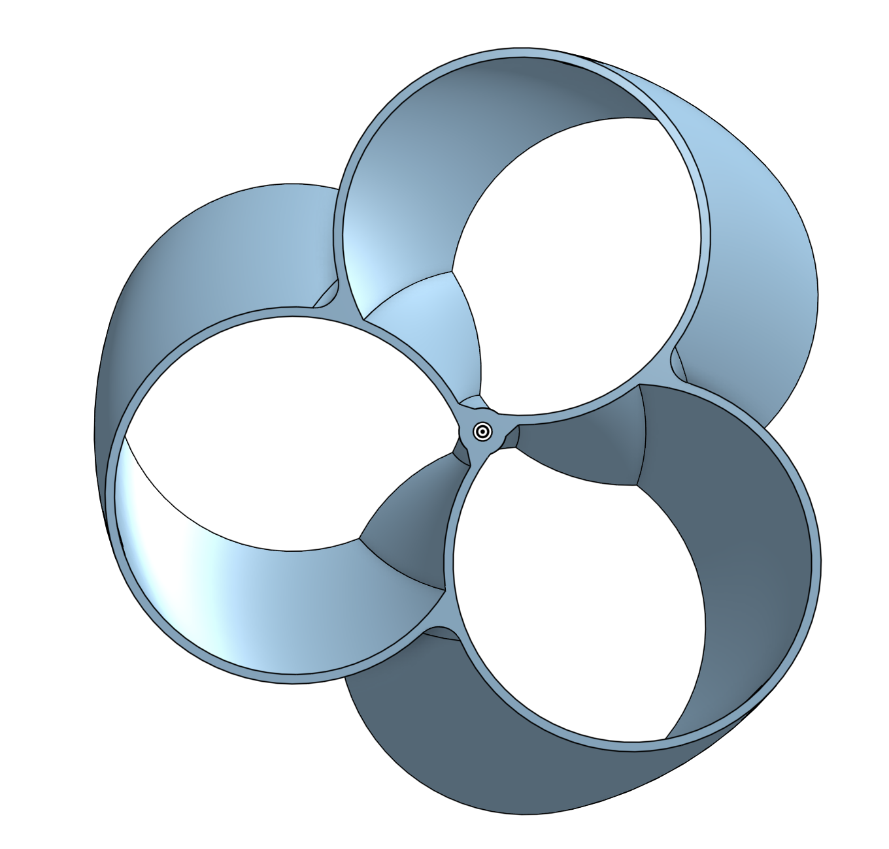

Built a 5-inch FPV racing drone from scratch — self-taught soldering included — and co-led a high school drone program where I designed micro-drone templates and taught new builders.

🚁 Built a 5" FPV racer from scratch · Self-taught soldering end-to-end · Designed 3+ micro-drone CAD templates · Co-led a high school drone program.
5-Inch FPV Racing Drone
This was my own personal project — researching, selecting, and assembling a full 5-inch FPV (First Person View) racing drone from scratch. It's one of the more capable and complex classes of drone in the hobby, and I wanted to understand why.
The most involved part was getting the component balance right. Motor KV, ESC current ratings, battery C-rating — it all has to work together at this power level, and getting it wrong means fried electronics or a drone that won't fly. I spent a lot of time researching before ordering anything.
I didn't know how to solder when I started, so I taught myself. All the wiring — flight controller, ESCs, motor leads, video transmitter — was done by hand.


Propeller Design Study
As part of a class project on the physics of drones, I modeled and compared propeller designs in SolidWorks — specifically looking at toroidal propeller geometry, which reduces tip vortices and noise compared to conventional blades.
I modeled both a 4-blade and 3-blade toroidal configuration and used the renders to compare blade geometry and airfoil shape across designs.


Micro-Drone Program
Separately from the personal build, I co-led the high school drone club and was responsible for getting new members up and flying. I designed templates for three different micro-drone setups — frame, parts list, and wiring — so beginners didn't have to figure out compatibility from scratch.
The CAD side of this involved modeling the micro-drone frames and component layouts. Most new members got to flying within a few sessions using the templates.